Competition Nationale CHIKARA Cup 2019
le 13/10/2019 Chikara Cup 2019 –
PODIUMS Des athletes du club poseidon
Sporthal De Veerman
Loystraat 70
9220 Hamme
Belgium LINK: http://www.chikarahamme.be/
Photos

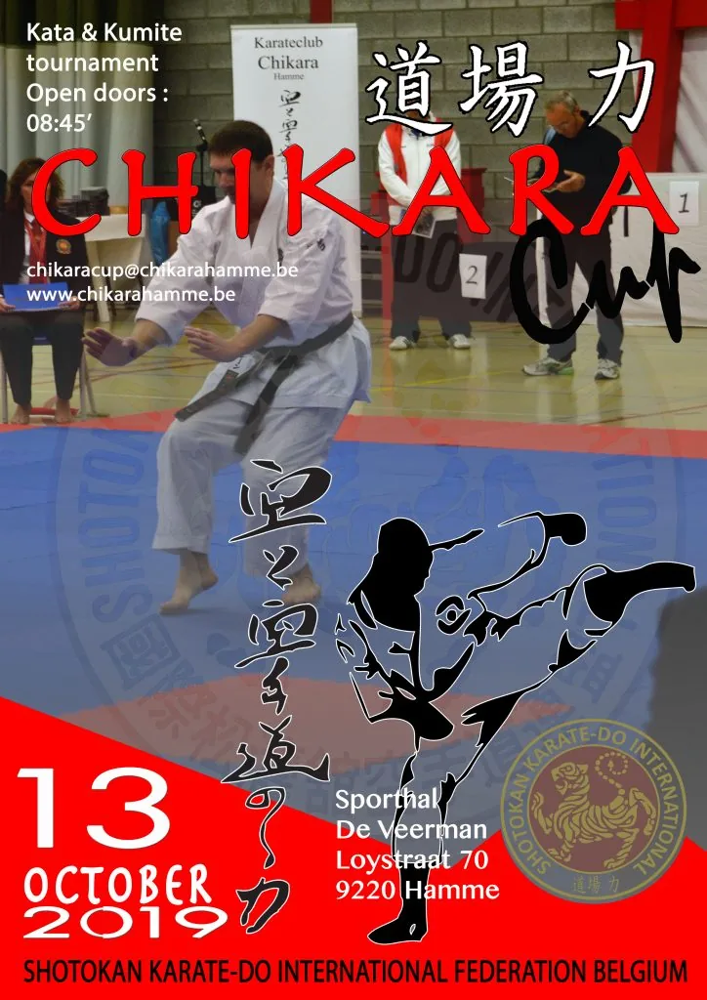

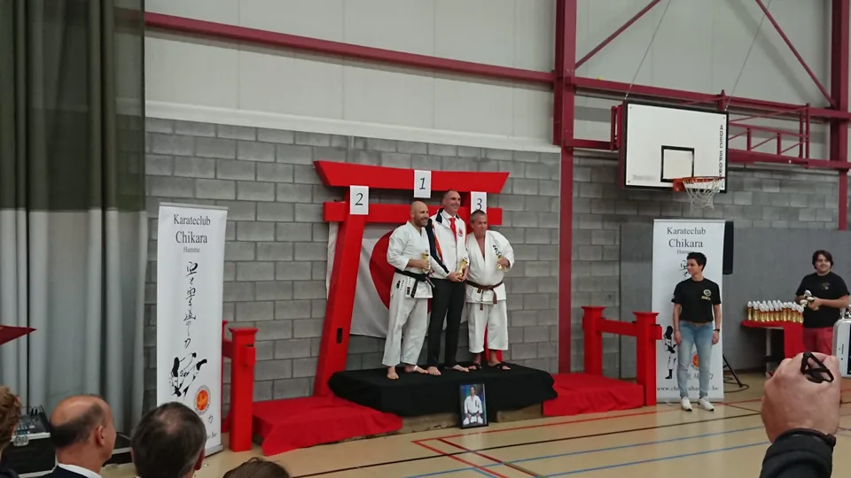

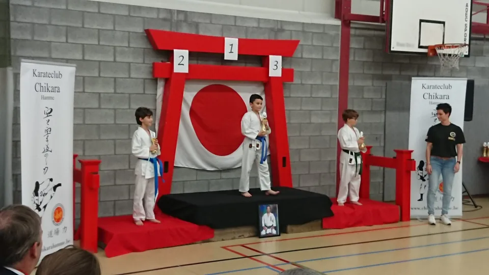

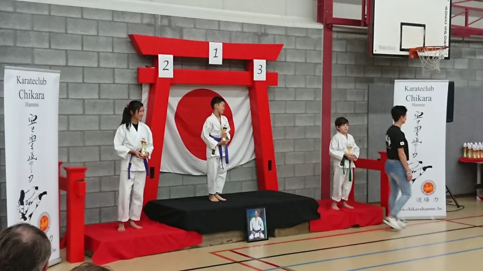

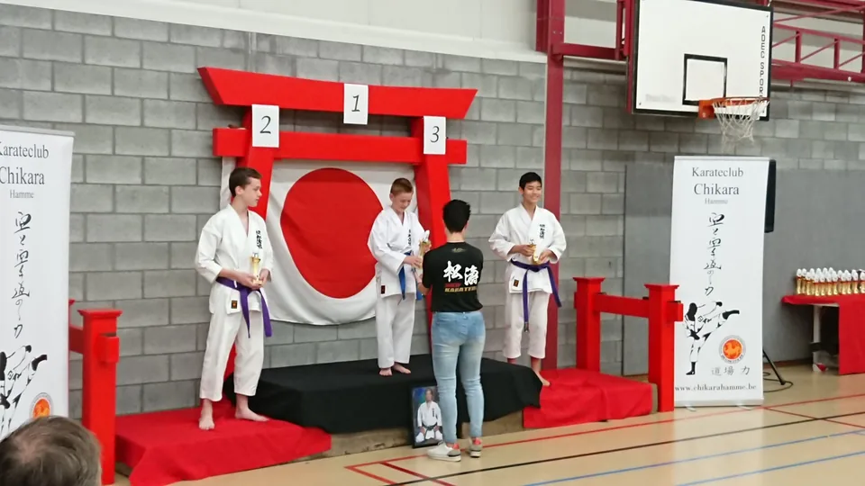

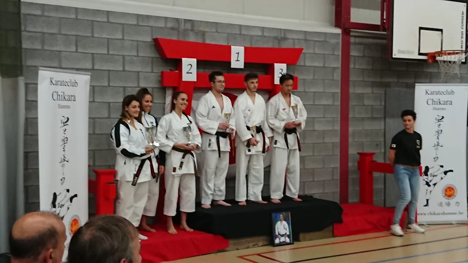

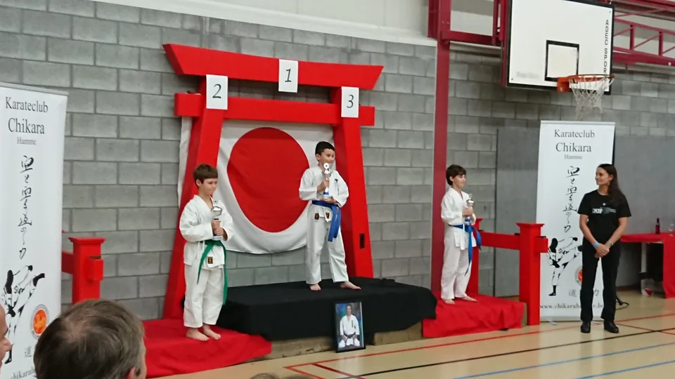

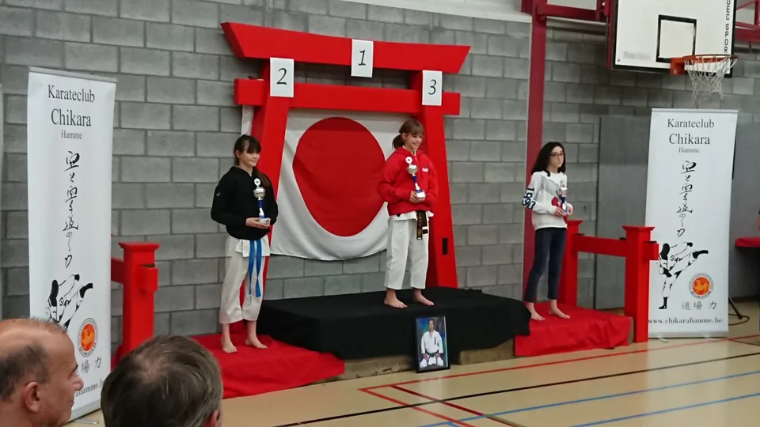

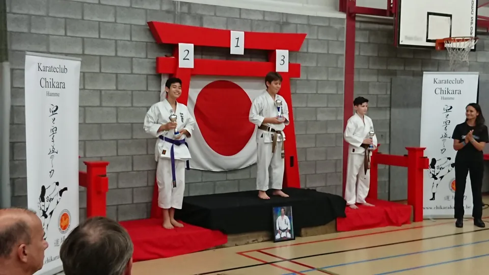

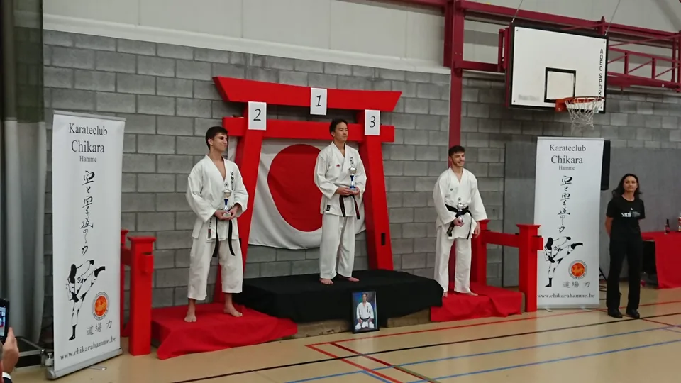

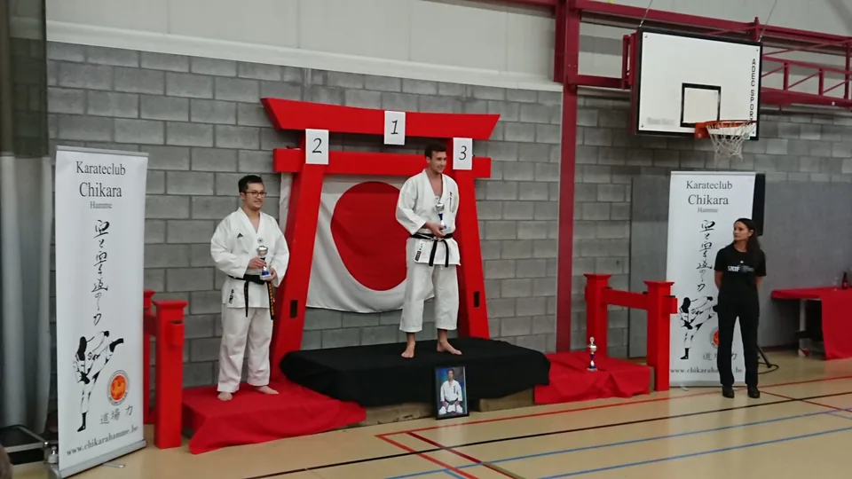

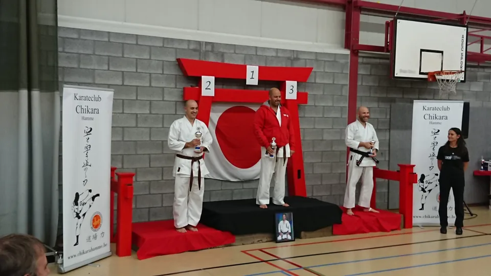

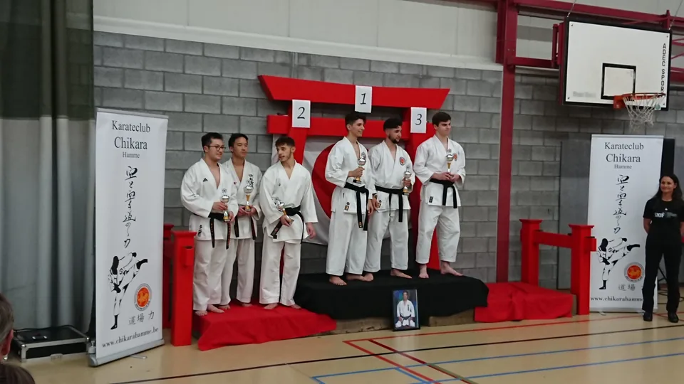

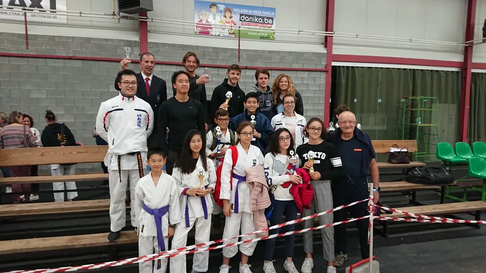

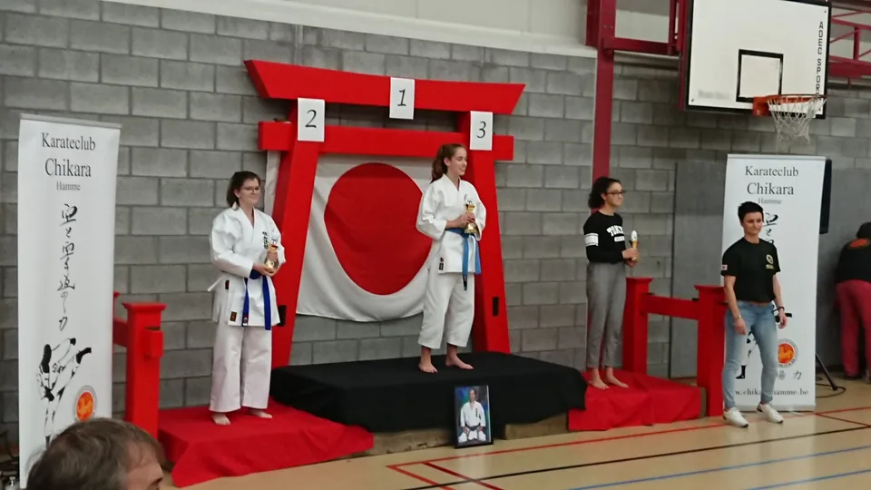

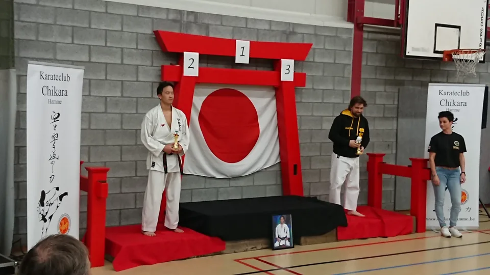